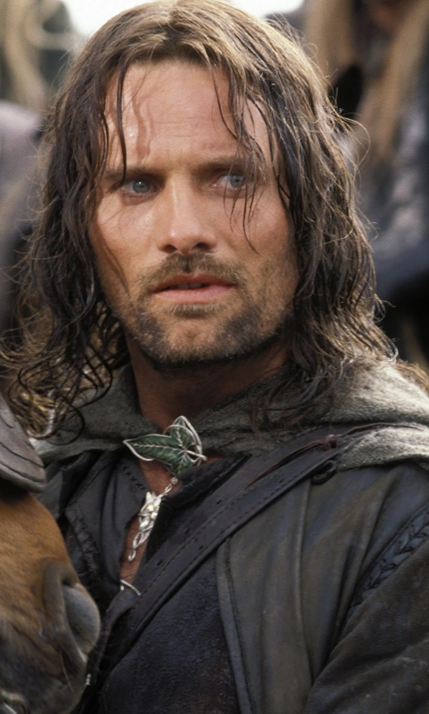

Choisis ta carte
Gandalf le Gris
Gandalf le Gris, plus tard connu sous le nom de Gandalf le Blanc, grand Mage
Aragorn
Il est le chef des Rôdeurs du Nord, surnommé Grand-Pas. Il est l'héritier du trône du Gondor.
Frodon

a mission est de transporter un anneau maléfique, appelé Anneau Unique, jusqu'au Mordor
Sauron
Sauron est le Seigneur des Ténèbres, il est recherche activement son anneau
Elrond

Elrond Peredhel est un Demi-elfe et Seigneur de Fondcombe. Il est un puissant seigneur elfe
Galadriel
Galadriel est la dame des bois de Lothlórien. Une elfe très puissante
Sam

Il était jardinier à Cul-de-Sac et s'est lié d'amitié avec Frodon Sacquet, le neveu de Bilbon.
Legolas

Legolas Vertefeuille est un Elfe Sinda, qui faisait partie de la Communauté de l'Anneau